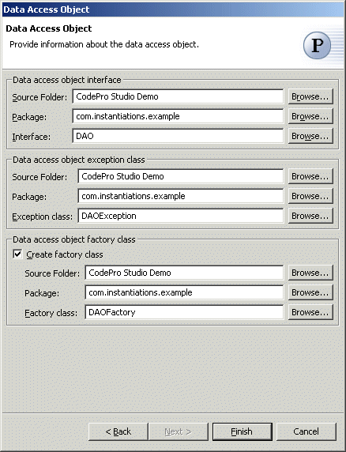

Data Access Object Pattern
The  Data Access
Object pattern separates a data resource's client interface from its data access
mechanisms, and adapts a specific data resource's access API to a generic client
interface.
Data Access
Object pattern separates a data resource's client interface from its data access
mechanisms, and adapts a specific data resource's access API to a generic client
interface.
Wizard
Applicability
Additional Resources
Wizard
| Option | Description | Default |
| Interface source folder | Enter a source folder for the data access object interface. Either type a valid source folder path or click Browse to select a source folder via a dialog. | The source folder of the element that was selected when the wizard was started. |
| Interface package | Enter a package to contain the data access object interface. Either type a valid package name or click Browse to select a package via a dialog. | The package of the element that was selected when the wizard was started. |
| Interface | Enter a name for the data access object interface. | <DAO> |
| Exception source folder | Enter a source folder for the data access object exception class. Either type a valid source folder path or click Browse to select a source folder via a dialog. | The source folder of the element that was selected when the wizard was started. |
| Exception package | Enter a package to contain the data access object exception class. Either type a valid package name or click Browse to select a package via a dialog. | The package of the element that was selected when the wizard was started. |
| Exception class | Enter a name for the data access object exception class. | <DAOException> |
| Create factory class | Determines whether to create a factory class for manufacturing instances of the data access object. | <true> |
| Factory source folder | Enter a source folder for the data access object factory class. Either type a valid source folder path or click Browse to select a source folder via a dialog. | The source folder of the element that was selected when the wizard was started. |
| Factory package | Enter a package to contain the data access object factory class. Either type a valid package name or click Browse to select a package via a dialog. | The package of the element that was selected when the wizard was started. |
| Factory class | Enter a name for the data access object factory class. | <DAOFactory> |
Applicability
Use the Data Access Object pattern when- Components need to be transparent to the actual persistent store or data source implementation to provide easy migration to different vendor products, different storage types, and different data source types.